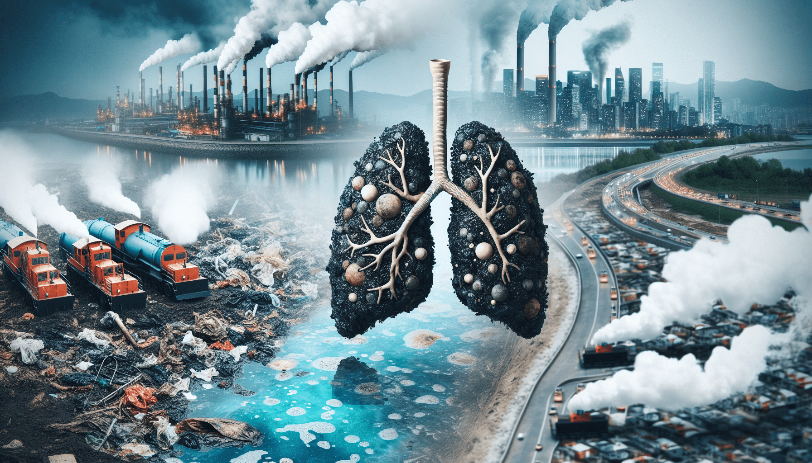

对人类的健康影响

- 大气污染：颗粒物、二氧化硫等有害物质可引发呼吸道疾病（如哮喘、支气管炎）、心血管疾病（导致血压升高、心脏病发作风险增加），部分污染物（如苯并芘）还是致癌物，易引发肺癌。 - 水污染：饮用含病原体的水会致感染性疾病（如霍乱、肠道疾病），水中重金属和有机污染物在体内蓄积会引起中毒，损害神经系统、肾脏等（如铅中毒影响儿童智力，汞中毒损害神经系统）。 - 土壤污染：土壤重金属通过食物链进入人体，如镉污染可致痛痛病（骨骼疼痛等），皮肤接触污染土壤也可能出现过敏、炎症等危害。
对植物的影响
- 大气污染：损害叶片功能（如二氧化硫破坏叶绿体结构），阻碍生长发育（如臭氧抑制呼吸作用），降低抗逆性（易受病虫害、极端气候影响）。 - 水污染：根部受损（污水中有害物质破坏根细胞结构），生长异常（如水中营养过剩致水华，使植物缺氧死亡）。 - 土壤污染：养分失衡（改变土壤化学性质，影响养分循环），毒害作用（污染物在植物体内积累，抑制生理功能）。
了解更多环保知识，加入我们，一起行动！